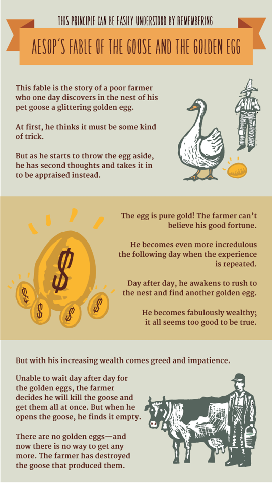

The diagram on the preceding page is a visual representation of the sequence and the interdependence of the Seven Habits, and will be used throughout this book as we explore both the sequential relationship between the habits and also their synergy—how, in relating to each other, they create bold new forms of each other that add even more to their value. Each concept or habit will be highlighted as it is introduced.
EFFECTIVENESS DEFINED
The Seven Habits are habits of effectiveness. Because they are based on principles, they bring the maximum long-term beneficial results possible. They become the basis of a person’s character, creating an empowering center of correct maps from which an individual can effectively solve problems, maximize opportunities, and continually learn and integrate other principles in an upward spiral of growth.
They are also habits of effectiveness because they are based on a paradigm of effectiveness that is in harmony with a natural law, a principle I call the “P/PC Balance,” which many people break themselves against. This principle can be easily understood by remembering Aesop’s fable of the goose and the golden egg.

This fable is the story of a poor farmer who one day discovers in the nest of his pet goose a glittering golden egg. At first, he thinks it must be some kind of trick. But as he starts to throw the egg aside, he has second thoughts and takes it in to be appraised instead.
The egg is pure gold! The farmer can’t believe his good fortune. He becomes even more incredulous the following day when the experience is repeated. Day after day, he awakens to rush to the nest and find another golden egg. He becomes fabulously wealthy; it all seems too good to be true.
But with his increasing wealth comes greed and impatience. Unable to wait day after day for the golden eggs, the farmer decides he will kill the goose and get them all at once. But when he opens the goose, he finds it empty. There are no golden eggs—and now there is no way to get any more. The farmer has destroyed the goose that produced them.
I suggest that within this fable is a natural law, a principle—the basic definition of effectiveness. Most people see effectiveness from the golden egg paradigm: the more you produce, the more you do, the more effective you are.
But as the story shows, true effectiveness is a function of two things: what is produced (the golden eggs) and the producing asset or capacity to produce (the goose).
If you adopt a pattern of life that focuses on golden eggs and neglects the goose, you will soon be without the asset that produces golden eggs. On the other hand, if you only take care of the goose with no aim toward the golden eggs, you soon won’t have the wherewithal to feed yourself or the goose.
Effectiveness lies in the balance—what I call the P/PC Balance. P stands for production of desired results, the golden eggs. PC stands for production capability, the ability or asset that produces the golden eggs.
THREE KINDS OF ASSETS
Basically, there are three kinds of assets: physical, financial, and human. Let’s look at each one in turn.
A few years ago, I purchased a physical asset—a power lawnmower. I used it over and over again without doing anything to maintain it. The mower worked well for two seasons, but then it began to break down. When I tried to revive it with service and sharpening, I discovered the engine had lost over half its original power capacity. It was essentially worthless.
Had I invested in PC—in preserving and maintaining the asset—I would still be enjoying its P—the mowed lawn. As it was, I had to spend far more time and money replacing the mower than I ever would have spent, had I maintained it. It simply wasn’t effective.
In our quest for short-term returns, or results, we often ruin a prized physical asset—a car, a computer, a washer or dryer, even our body or our environment. Keeping P and PC in balance makes a tremendous difference in the effective use of physical assets.
It also powerfully impacts the effective use of financial assets. How often do people confuse principal with interest? Have you ever invaded principal to increase your standard of living, to get more golden eggs? The decreasing principal has decreasing power to produce interest or income. And the dwindling capital becomes smaller and smaller until it no longer supplies even basic needs.
Our most important financial asset is our own capacity to earn. If we don’t continually invest in improving our own PC, we severely limit our options. We’re locked into our present situation, running scared of our corporation or our boss’s opinion of us, economically dependent and defensive. Again, it simply isn’t effective.
In the human area, the P/PC Balance is equally fundamental, but even more important, because people control physical and financial assets.
When two people in a marriage are more concerned about getting the golden eggs, the benefits, than they are in preserving the relationship that makes them possible, they often become insensitive and inconsiderate, neglecting the little kindnesses and courtesies so important to a deep relationship. They begin to use control levers to manipulate each other, to focus on their own needs, to justify their own position and look for evidence to show the wrongness of the other person. The love, the richness, the softness and spontaneity begin to deteriorate. The goose gets sicker day by day.
And what about a parent’s relationship with a child? When children are little, they are very dependent, very vulnerable. It becomes so easy to neglect the PC work—the training, the communicating, the relating, the listening. It’s easy to take advantage, to manipulate, to get what you want the way you want it—right now! You’re bigger, you’re smarter, and you’re right! So why not just tell them what to do? If necessary, yell at them, intimidate them, insist on your way.
Or you can indulge them. You can go for the golden egg of popularity, of pleasing them, giving them their way all the time. Then they grow up without any internal sense of standards or expectations, without a personal commitment to being disciplined or responsible.
Either way—authoritarian or permissive—you have the golden egg mentality. You want to have your way or you want to be liked. But what happens, meantime, to the goose? What sense of responsibility, of self-discipline, of confidence in the ability to make good choices or achieve important goals is a child going to have a few years down the road? And what about your relationship? When he reaches those critical teenage years, the identity crises, will he know from his experience with you that you will listen without judging, that you really, deeply care about him as a person, that you can be trusted, no matter what? Will the relationship be strong enough for you to reach him, to communicate with him, to influence him?
Suppose you want your daughter to have a clean room—that’s P, production, the golden egg. And suppose you want her to clean it—that’s PC, production capability. Your daughter is the goose, the asset, that produces the golden egg.
If you have P and PC in balance, she cleans the room cheerfully, without being reminded, because she is committed and has the discipline to stay with the commitment. She is a valuable asset, a goose that can produce golden eggs.
But if your paradigm is focused on production, on getting the room clean, you might find yourself nagging her to do it. You might even escalate your efforts to threatening or yelling, and in your desire to get the golden egg, you undermine the health and welfare of the goose.
***
Let me share with you an interesting PC experience I had with one of my daughters. We were planning a private date, which is something I enjoy regularly with each of my children. We find that the anticipation of the date is as satisfying as the realization.
So I approached my daughter and said, “Honey, tonight’s your night. What do you want to do?”
“Oh, Dad, that’s okay,” she replied.
“No, really,” I said. “What would you like to do?”
“Well,” she finally said, “what I want to do, you don’t really want to do.”
“Really, honey,” I said earnestly, “I want to do it. No matter what, it’s your choice.”
“I want to go see Star Wars,” she replied. “But I know you don’t like Star Wars. You slept through it before. You don’t like these fantasy movies. That’s okay, Dad.”
“No, honey, if that’s what you’d like to do, I’d like to do it.”
“Dad, don’t worry about it. We don’t always have to have this date.” She paused and then added, “But you know why you don’t like Star Wars? It’s because you don’t understand the philosophy and training of a Jedi Knight.”
“What?”
“You know the things you teach, Dad? Those are the same things that go into the training of a Jedi Knight.”
“Really? Let’s go to Star Wars!”
And we did. She sat next to me and gave me the paradigm. I became her student, her learner. It was totally fascinating. I could begin to see out of a new paradigm the whole way a Jedi Knight’s basic philosophy in training is manifested in different circumstances.
That experience was not a planned P experience; it was the serendipitous fruit of a PC investment. It was bonding and very satisfying. But we enjoyed golden eggs, too, as the goose—the quality of the relationship—was significantly fed.
ORGANIZATIONAL PC
One of the immensely valuable aspects of any correct principle is that it is valid and applicable in a wide variety of circumstances. Throughout this book, I would like to share with you some of the ways in which these principles apply to organizations, including families, as well as to individuals.
When people fail to respect the P/PC Balance in their use of physical assets in organizations, they decrease organizational effectiveness and often leave others with dying geese.
For example, a person in charge of a physical asset, such as a machine, may be eager to make a good impression on his superiors. Perhaps the company is in a rapid growth stage and promotions are coming fast. So he produces at optimum levels—no downtime, no maintenance. He runs the machine day and night. The production is phenomenal, costs are down, and profits skyrocket. Within a short time, he’s promoted. Golden eggs!
But suppose you are his successor on the job. You inherit a very sick goose, a machine that, by this time, is rusted and starts to break down. You have to invest heavily in downtime and maintenance. Costs skyrocket; profits nose-dive. And who gets blamed for the loss of golden eggs? You do. Your predecessor liquidated the asset, but the accounting system only reported unit production, costs, and profit.
The P/PC Balance is particularly important as it applies to the human assets of an organization—the customers and the employees.
I know of a restaurant that served a fantastic clam chowder and was packed with customers every day at lunchtime. Then the business was sold, and the new owner focused on golden eggs—he decided to water down the chowder. For about a month, with costs down and revenues constant, profits zoomed. But little by little, the customers began to disappear. Trust was gone, and business dwindled to almost nothing. The new owner tried desperately to reclaim it, but he had neglected the customers, violated their trust, and lost the asset of customer loyalty. There was no more goose to produce the golden egg.
There are organizations that talk a lot about the customer and then completely neglect the people that deal with the customer—the employees. The PC principle is to always treat your employees exactly as you want them to treat your best customers.
You can buy a person’s hand, but you can’t buy his heart. His heart is where his enthusiasm, his loyalty is. You can buy his back, but you can’t buy his brain. That’s where his creativity is, his ingenuity, his resourcefulness.
PC work is treating employees as volunteers just as you treat customers as volunteers, because that’s what they are. They volunteer the best part—their hearts and minds.
***
I was in a group once where someone asked, “How do you shape up lazy and incompetent employees?” One man responded, “Drop hand grenades!” Several others cheered that kind of macho management talk, that “shape up or ship out” supervision approach.
But another person in the group asked, “Who picks up the pieces?”
“No pieces.”
“Well, why don’t you do that to your customers?” the other man replied. “Just say, ‘Listen, if you’re not interested in buying, you can just ship out of this place.’”
He said, “You can’t do that to customers.”
“Well, how come you can do it to employees?”
“Because they’re in your employ.”
“I see. Are your employees devoted to you? Do they work hard? How’s the turnover?”
“Are you kidding? You can’t find good people these days. There’s too much turnover, absenteeism, moonlighting. People just don’t care anymore.”
That focus on golden eggs—that attitude, that paradigm—is totally inadequate to tap into the powerful energies of the mind and heart of another person. A short-term bottom line is important, but it isn’t all-important.
Effectiveness lies in the balance. Excessive focus on P results in ruined health, worn-out machines, depleted bank accounts, and broken relationships. Too much focus on PC is like a person who runs three or four hours a day, bragging about the extra ten years of life it creates, unaware he’s spending them running. Or a person endlessly going to school, never producing, living on other people’s golden eggs—the eternal student syndrome.
To maintain the P/PC Balance, the balance between the golden egg (production) and the health and welfare of the goose (production capability) is often a difficult judgment call. But I suggest it is the very essence of effectiveness. It balances short term with long term. It balances going for the grade and paying the price to get an education. It balances the desire to have a room clean and the building of a relationship in which the child is internally committed to do it—cheerfully, willingly, without external supervision.
It’s a principle you can see validated in your own life when you burn the candle at both ends to get more golden eggs and wind up sick or exhausted, unable to produce any at all; or when you get a good night’s sleep and wake up ready to produce throughout the day.
You can see it when you press to get your own way with someone and somehow feel an emptiness in the relationship; or when you really take time to invest in a relationship and you find the desire and ability to work together, to communicate, takes a quantum leap.
The P/PC Balance is the very essence of effectiveness. It’s validated in every arena of life. We can work with it or against it, but it’s there. It’s a lighthouse. It’s the definition and paradigm of effectiveness upon which the Seven Habits in this book are based.
HOW TO USE THIS BOOK
Before we begin work on the Seven Habits of Highly Effective People, I would like to suggest two paradigm shifts that will greatly increase the value you will receive from this material.
First, I would recommend that you not “see” this material as a book, in the sense that it is something to read once and put on a shelf.
You may choose to read it completely through once for a sense of the whole. But the material is designed to be a companion in the continual process of change and growth. It is organized incrementally and with suggestions for application at the end of each habit so that you can study and focus on any particular habit as you are ready.
As you progress to deeper levels of understanding and implementation, you can go back time and again to the principles contained in each habit and work to expand your knowledge, skill, and desire.
Second, I would suggest that you shift your paradigm of your own involvement in this material from the role of learner to that of teacher. Take an inside-out approach, and read with the purpose in mind of sharing or discussing what you learn with someone else within 48 hours after you learn it.
If you had known, for example, that you would be teaching the material on the P/PC Balance principle to someone else within 48 hours, would it have made a difference in your reading experience? Try it now as you read the final section in this chapter. Read as though you are going to teach it to your spouse, your child, a business associate, or a friend today or tomorrow, while it is still fresh, and notice the difference in your mental and emotional process.
I guarantee that if you approach the material in each of the following chapters in this way, you will not only better remember what you read, but your perspective will be expanded, your understanding deepened, and your motivation to apply the material increased.
In addition, as you openly, honestly share what you’re learning with others, you may be surprised to find that negative labels or perceptions others may have of you tend to disappear. Those you teach will see you as a changing, growing person, and will be more inclined to be helpful and supportive as you work, perhaps together, to integrate the Seven Habits into your lives.
In the last analysis, as Marilyn Ferguson observed, “No one can persuade another to change. Each of us guards a gate of change that can only be opened from the inside. We cannot open the gate of another, either by argument or by emotional appeal.”
If you decide to open your “gate of change” to really understand and live the principles embodied in the Seven Habits, I feel comfortable in assuring you several positive things will happen.
First, your growth will be evolutionary, but the net effect will be revolutionary. Would you not agree that the P/PC Balance principle alone, if fully lived, would transform most individuals and organizations?
The net effect of opening the “gate of change” to the first three habits—the habits of Private Victory—will be significantly increased self-confidence. You will come to know yourself in a deeper, more meaningful way—your nature, your deepest values and your unique contribution capacity. As you live your values, your sense of identity, integrity, control, and inner-directedness will infuse you with both exhilaration and peace. You will define yourself from within, rather than by people’s opinions or by comparisons to others. “Wrong” and “right” will have little to do with being found out.
Ironically, you’ll find that as you care less about what others think of you, you will care more about what others think of themselves and their worlds, including their relationship with you. You’ll no longer build your emotional life on other people’s weaknesses. In addition, you’ll find it easier and more desirable to change because there is something—some core deep within—that is essentially changeless.
As you open yourself to the next three habits—the habits of Public Victory—you will discover and unleash both the desire and the resources to heal and rebuild important relationships that have deteriorated, or even broken. Good relationships will improve—become deeper, more solid, more creative, and more adventuresome.
The seventh habit, if deeply internalized, will renew the first six and will make you truly independent and capable of effective interdependence. Through it, you can charge your own batteries.
Whatever your present situation, I assure you that you are not your habits. You can replace old patterns of self-defeating behavior with new patterns, new habits of effectiveness, happiness, and trust-based relationships.
With genuine caring, I encourage you to open the gate of change and growth as you study these habits. Be patient with yourself. Self-growth is tender; it’s holy ground. There’s no greater investment.
It’s obviously not a quick fix. But I assure you, you will feel benefits and see immediate payoffs that will be encouraging. In the words of Thomas Paine, “That which we obtain too easily, we esteem too lightly. It is dearness only which gives everything its value. Heaven knows how to put a proper price on its goods.”